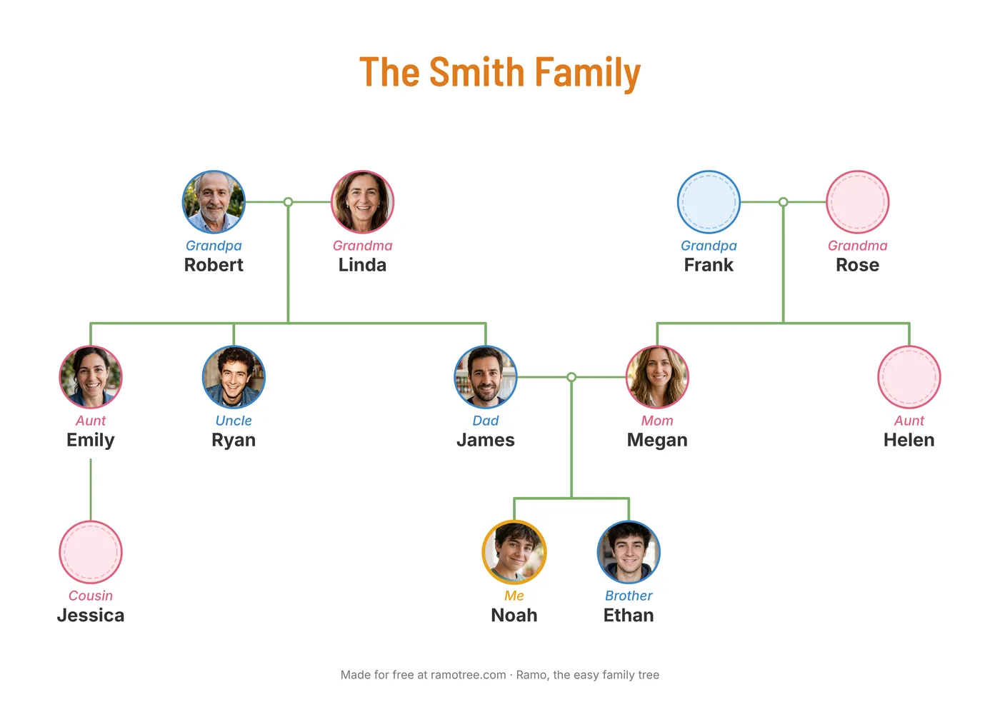

Family tree for kids: how to do the school project
“We have to bring a family tree tomorrow.” If that sounds familiar, here is a free template to print, ideas to make it look great, and how to do it with your child without the stress.
Do it in minutes: make your tree here, with everyone's names and photos or with spaces to draw, and download it to print.

What schools usually ask for
For younger children it's usually a three-generation tree: the child, their parents and their grandparents, with a photo or drawing of each. Older students are sometimes asked to add great-grandparents, aunts, uncles and cousins, or where the family comes from.
Step by step with your child
- Let them ask. A call or a visit to the grandparents to ask their names, where they were born and what they were like as children. It's the part kids remember most.
- Photos or drawings. Print small photos or let them draw each person in their box.
- Fill in the template. Names in their neatest handwriting, and the year of birth if there's room.
- Decorate it. Glue it onto poster board, draw a trunk and branches, or make the leaves from their handprints.
Family tree project ideas
- A poster with a drawn tree and the photos on the leaves.
- One branch for each side of the family, each in its own color.
- Make it on your phone with Ramo and print it: it comes out with everyone's photo, on letter, A4 or A3 paper, and you can print it large to hang in the classroom.
When the family doesn't fit the template
Separated parents, stepfamilies, adoption, two moms or two dads, grandparents who have passed away… The template is just a starting point: cross out, add boxes or draw new branches. What matters is that the child recognizes their own family. In Ramo anyone can have more than one partner, and the tree lays itself out.
If an unusual relationship comes up (what is a cousin once removed?), the cousin calculator explains it.
More guides